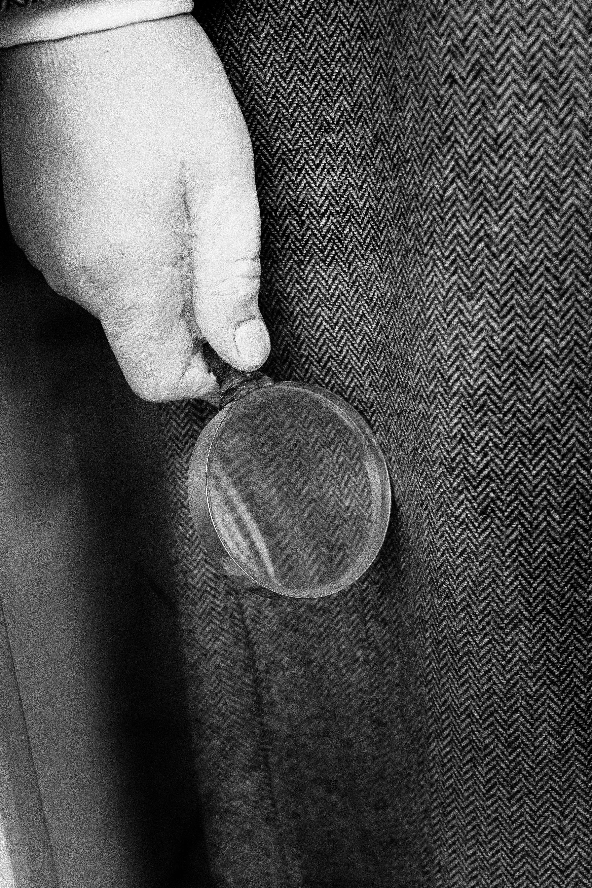
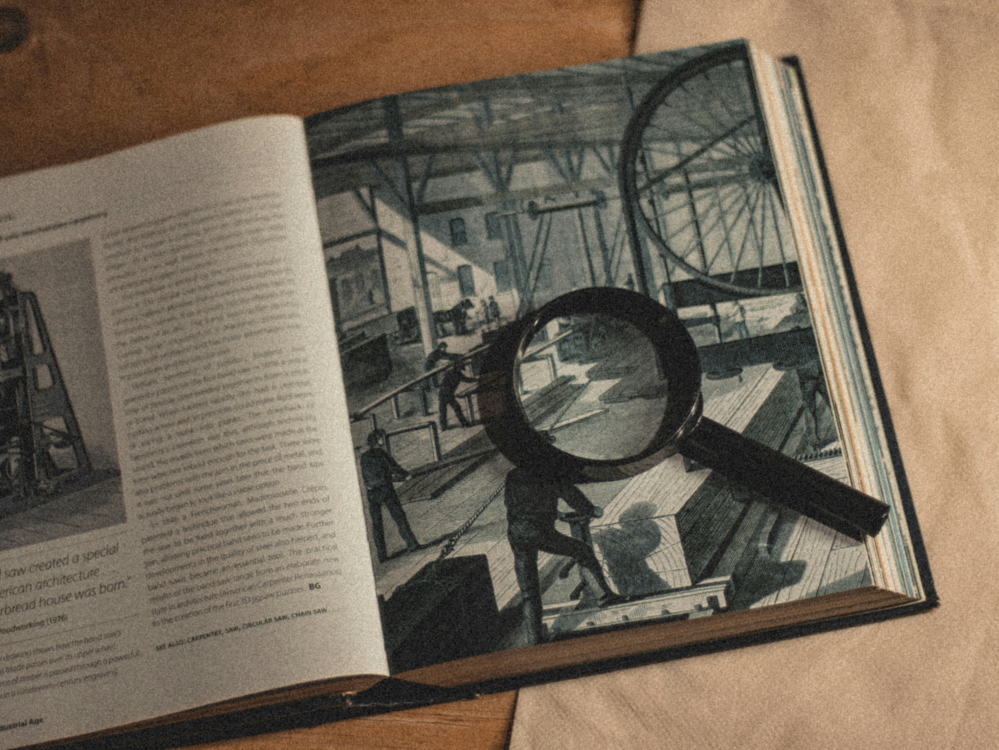

令和8年5月25日午後5時00分頃発生 ／ 罪名：殺人罪（刑法第199条）
「押したのか、助けようとしたのか」——階段の最上段で出された右手をめぐる攻防。
CASE FILE No. 令和8年検第123456号
01 — Investigation Mission
Participation Guide
本企画では、来場者の皆さんは「探偵事務所の調査員」として事件の依頼を受けます。所長と助手から調査プリントを受け取り、各教室で再現される現場検証や証言の聴取を経て、最後の法廷での判決を見届けます。
調査員の3つの任務

Investigation Tool
Classes & Flow
導入と探偵への依頼
事件概要・争点「押したのか、助けようとしたのか」の説明、調査プリント配布
現場検証
さくら公園西側階段の再現、ベンチと階段の位置関係、4mの落差の確認
林千秋の目撃証言
「夫が妻を右手で強く突き落とした」とする検察側証人の証言聴取
山田太郎の供述
「自分から足を滑らせた妻を助けようとした」とする被告人自身の弁解
高橋三郎の目撃証言
「妻が自ら足を滑らせ転落した。夫は助けようとしていた」とする弁護側証人
模擬裁判・判決
調査員の推理と法廷判断の照合、判決およびその理由の言渡
02 — Indictment
千葉地方検察庁より千葉地方裁判所へ提出された起訴状の公訴事実全文です。
事件番号
令和8年検第123456号
起訴年月日
令和8年6月15日
管轄裁判所 / 検察官
千葉地方裁判所 殿 ／ 検察官検事 千葉 健次

OFFICIAL RECORD
【公訴事実】
被告人は、かねてより認知症であった山田花子（当時62歳）の介護を行ってきたものであるが、同女の介護に疲れたことや同女が死亡すれば生命保険金が入手できることから、同女を殺害しようと企て、令和8年5月25日午後5時00分ころ、千葉市中央区桜ヶ丘9丁目1番地所在のさくら公園西側階段の最上段付近において、殺意をもって、同女の身体を右手で強く突き、同女を同所から4メートル下の階段踊り場に転倒させ、よって、同日午後5時15分ころ、同所において、同女を頭蓋骨骨折、脳挫傷により死亡させて殺害したものである。
裁判長の問いかけに対する被告人の答弁：
「わたしは妻を殺してはいません。
妻が自分から足を滑らせて階段から落ちてしまったのです。」
— 被告人・山田太郎
公訴事実に対する弁護人の陳述：
「被告人が被害者の身体を押した事実はありません。
したがって、被告人は無罪です。」
— 弁護人
03 — Arguments & Dispute
法廷で証拠調べの冒頭に双方から述べられた、事実関係と立証方針の全容です。
本件最大の争点
「階段の最上段で出された夫の右手は、
妻を突き落とすための手だったのか、
それとも転落を防ぐため助けようとした手だったのか」
1. 被告人の身上経歴と困窮
夫婦として生活。6年前に妻が若年性認知症と診断され、1年後に本格的介護が必要となり早期退職。5年間にわたり介護を継続し、妻の障害年金と退職金を切り崩しながら生活していた。
2. 犯行の動機（介護疲れと多額の保険金）
長年の介護に疲れ果て、日頃から「死んで欲しい」と口にしていた。さらに妻には5,000万円の生命保険金（受取人は被告人）が掛けられており、介護からの解放と保険金獲得を企てた。
3. 犯行態様と目撃証拠
階段の最上段で、殺意をもって妻の身体を右手で強く突き落とした。この突き落とした瞬間を、証人・林千秋氏が明確に目撃している。
4. 弁護側証拠への反論
被告人の「事故である」との弁解は不合理であり、弁護側証人・高橋三郎氏の証言は信用性に乏しいと主張。
1. 献身的な介護と散歩の日課
認知症が進行し記憶や行動が混乱する妻に対し、太郎さんは日々献身的に介護。進行抑制と寝たきり防止のため、毎日の散歩を欠かさず行っていた。
2. 事件当日の経緯（缶ジュースと急階段）
散歩中、妻が「のどが渇いた」と言ったためベンチに座らせて缶ジュースを取り出そうとした。その間に妻が階段方向へふらふら歩き出し、「そのジュースは嫌だ」と急に拒否した。
3. 大声での叱責と転落の瞬間
介護疲れもあり、近づきながらつい大声で叱ってしまった。大声に驚いた妻が後ずさりし、背後の急階段でバランスを崩して足を滑らせ転落した。
4. 右手の真意と目撃証拠
伸ばした手は、転落しそうな妻の腕をつかんで助けようとした手であり間に合わなかったもの。証人・高橋三郎氏が、妻が誤って転落した様子を目撃している。
04 — Dramatis Personae
起訴状および法廷記録に基づく関係者の詳細プロフィールと供述内容です。
やまだ たろう（62歳・勾留中）
昭和39年4月3日生まれ、無職（元会社員）。本籍および住所は千葉市中央区中央4丁目13番9号。前科・前歴はありません。以前は会社員として勤めていましたが、妻・花子さんが約6年前に若年性認知症と診断され、その約1年後に本格的な介護が必要となったため早期退職しました。
事件までの5年間にわたり専業介護者として妻を支え、生活は妻の障害年金と自身の退職金を切り崩しながら営んでいました。令和8年5月25日午後5時00分頃、さくら公園西側階段の最上段付近において殺意をもって妻を突き落としたとして殺人罪（刑法第199条）で起訴されました。
【本人の供述・弁解】
「殺意も、妻を押した事実も絶対にありません。缶ジュースを拒否されてつい大声で叱ってしまい、驚いた妻が後ずさりして急階段から足を滑らせた事故です。とっさに手を伸ばして妻の腕をつかもうとしましたが、間に合いませんでした。」
やまだ はなこ（享年62歳）
被告人・山田太郎の妻で、事件当時は62歳の専業主婦でした。約6年前に若年性認知症と診断され、約5年前から本格的な介護を受けていました。
事件当時は認知症の症状が進行しており、突然支離滅裂なことを口走ったり、昔の記憶や過去の生活をごちゃごちゃにして話したり行動したりする状態でした。夫・太郎さんは寝たきり防止や症状の進行抑制のために毎日の散歩を日課としており、事件当日も散歩に出ていました。
令和8年5月25日午後5時00分頃、さくら公園西側階段の最上段付近から約4メートル下の階段踊り場へ転落。同日午後5時15分頃、頭蓋骨骨折および脳挫傷により死亡が確認されました。
はやし ちあき
事件の瞬間を目撃したとされる検察側の最重要証人です（体験企画では3組教室にて証言聴取を実施）。
【目撃証言の骨子】
「さくら公園西側階段の付近で、被告人・山田太郎が被害者・山田花子の身体を右手で強く（強烈に）突き落とした場面を目撃しました。」
検察側はこの林証言を、「被告人に明確な殺意があり、被害者を意図的に突き落とした」ことを証明する中心的な直接証拠として位置付けています。調査員（参加者）は、林氏の立ち位置や視野、目撃の確実性について現場検証（2組）の記録と突き合わせながら検証を進めます。
たかはし さぶろう
被害者が転落する現場を目撃したとされる弁護側の証人です（体験企画では5組教室にて証言聴取を実施）。
【目撃証言の骨子】
「被害者が自ら誤って足を滑らせて階段から落ちていく様子を目撃しました。さらに、転落しそうになった妻に対し、夫・山田太郎は助けようとしてとっさに手を伸ばしていました。」
弁護側はこの証言を、本件が故意による殺人事件ではなく、不可抗力による悲痛な転落事故であることの決定的証拠として主張しています。なお、検察側は「高橋氏の証言は信用性に乏しい」として法廷において反論を行っています。